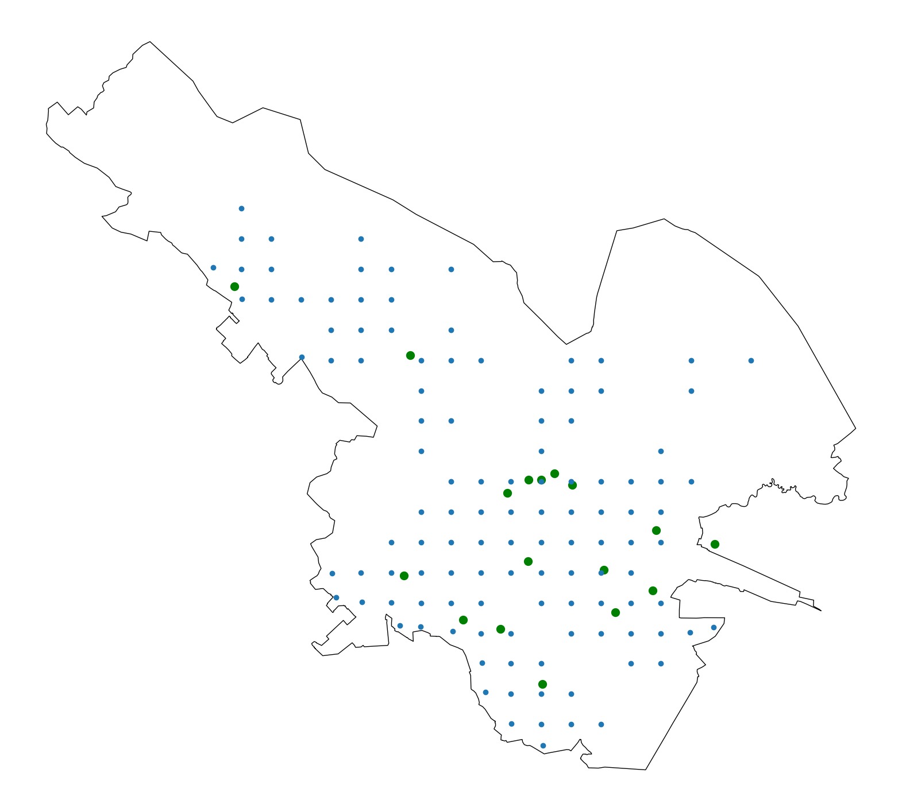
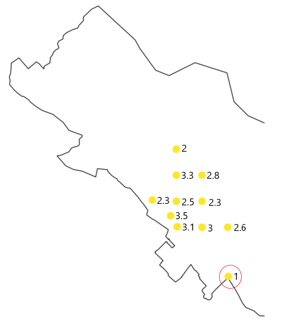
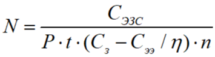
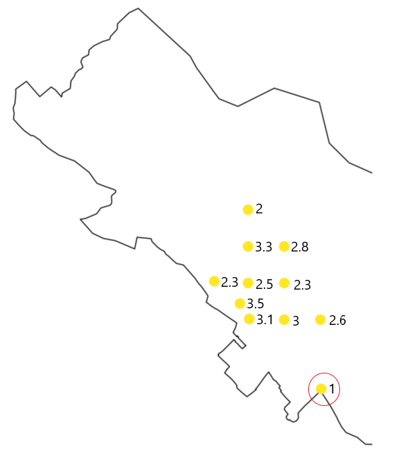
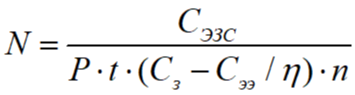

Расположение предполагаемых заправок с учетом парковок

Кластеризация с учетом существующих заправок
 Внутри кластера убираем заправку с наименьшей нагрузкой, каждый раз
пересчитывая нагрузки

Расчет срока окупаемости предполагаемой заправки

Внутри кластера убираем заправку с наименьшей нагрузкой, каждый раз
пересчитывая нагрузки

Расчет срока окупаемости предполагаемой заправки

- Сэзс – совокупная стоимость ЭЗС, руб;
- Р – мощность ЭЗС, кВт;
- t – время одной зарядки, ч;
- Сз – стоимость 1 кВтч заправки, руб;
- Сээ – стоимость закупаемой ЭЭ, руб;
- η – коэффициент, учитывающий потери в подводящей сети, о.е.;
- n – количество заряжаемых электромобилей в день